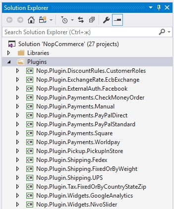
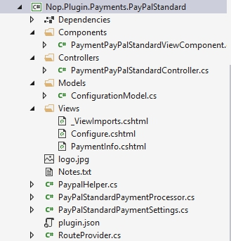

How to write a plugin for nopCommerce
Plugins are used to extend the functionality of nopCommerce. nopCommerce has several types of plugins. For example, payment methods (such as PayPal), tax providers, shipping method computation methods (such as UPS, USP, FedEx), widgets (such as 'live chat' block), and many others. nopCommerce is already distributed with many different plugins. You can also search various plugins on the nopCommerce official site to see if someone has already created a plugin that suits your needs. If not, this article will guide you through the process of creating your plugin.
The plugin structure, required files, and locations
First thing you need to do is to create a new
Class Libraryproject in the solution. It's a good practice to place all plugins into the\Pluginsdirectory in the root of your solution (do not mix up with\Pluginssubdirectory located in\Nop.Webdirectory which is used for already deployed plugins). It's a good practice to place all plugins into thePluginssolution folder.A recommended name for a plugin project is
Nop.Plugin.{Group}.{Name}.{Group}is your plugin group (for example, Payment or Shipping).{Name}is your plugin name (for example, PayPalStandard). For example, the PayPal Standard payment plugin has the following name:Nop.Plugin.Payments.PayPalStandard. But please note that it's not a requirement. And you can choose any name for a plugin. For example,MyGreatPlugin.
Once the plugin project is created you have to open its
.csprojfile in any text editor and replace its content with the following one:<Project Sdk="Microsoft.NET.Sdk"> <PropertyGroup> <TargetFramework>net5.0</TargetFramework> <Copyright>SOME_COPYRIGHT</Copyright> <Company>YOUR_COMPANY</Company> <Authors>SOME_AUTHORS</Authors> <PackageLicenseUrl>PACKAGE_LICENSE_URL</PackageLicenseUrl> <PackageProjectUrl>PACKAGE_PROJECT_URL</PackageProjectUrl> <RepositoryUrl>REPOSITORY_URL</RepositoryUrl> <RepositoryType>Git</RepositoryType> <OutputPath>..\..\Presentation\Nop.Web\Plugins\PLUGIN_OUTPUT_DIRECTORY</OutputPath> <OutDir>$(OutputPath)</OutDir> <!--Set this parameter to true to get the dlls copied from the NuGet cache to the output of your project. You need to set this parameter to true if your plugin has a nuget package to ensure that the dlls copied from the NuGet cache to the output of your project--> <CopyLocalLockFileAssemblies>true</CopyLocalLockFileAssemblies> </PropertyGroup> <ItemGroup> <ProjectReference Include="..\..\Presentation\Nop.Web.Framework\Nop.Web.Framework.csproj" /> <ClearPluginAssemblies Include="$(MSBuildProjectDirectory)\..\..\Build\ClearPluginAssemblies.proj" /> </ItemGroup> <!-- This target execute after "Build" target --> <Target Name="NopTarget" AfterTargets="Build"> <!-- Delete unnecessary libraries from plugins path --> <MSBuild Projects="@(ClearPluginAssemblies)" Properties="PluginPath=$(MSBuildProjectDirectory)\$(OutDir)" Targets="NopClear" /> </Target> </Project>Tip
Where PLUGIN_OUTPUT_DIRECTORY should be replaced with the plugin name, for example,
Payments.PayPalStandard.We do it this way to be able to use a new approach to add third-party references which were introduced in .NET Core. But it's not required. Moreover, references from already referenced libraries will be loaded automatically. So it is very convenient.
The next step is creating a
plugin.jsonfile required for each plugin. This file contains meta-information describing your plugin. Just copy this file from any other existing plugin and modify it for your needs. For information about theplugin.jsonfile, please see plugin.json fileThe last required step is to create a class that implements
IPlugininterface (Nop.Services.Pluginsnamespace). nopCommerce hasBasePluginclass which already implements someIPluginmethods and allows you to avoid source code duplication. nopCommerce also provides you with some specific interfaces derived fromIPlugin. For example, we have theIPaymentMethodinterface which is used for creating new payment method plugins. It contains some methods which are specific only for payment methods such asProcessPayment()orGetAdditionalHandlingFee(). Currently, nopCommerce has the following specific plugin interfaces:IPaymentMethod. These plugins are used for payment processing.
IShippingRateComputationMethod. These plugins are used for retrieving accepted delivery methods and appropriate shipping rates. For example, UPS, UPS, FedEx, etc.
IPickupPointProvider. These plugins are used for providing pickup points.
ITaxProvider. Tax providers are used for getting tax rates.
IExchangeRateProvider. Used for getting currency exchange rate.
IDiscountRequirementRule. Allows you to create new discount rules such as "Billing country of a customer should be…"
IExternalAuthenticationMethod. Used for creating external authentication methods such as Facebook, Twitter, OpenID, etc.
IMultiFactorAuthenticationMethod. Used for creating multi-factor authentication methods such as GoogleAuthenticator, etc.
Note
This is a new interface, since version 4.40 we provide the corresponding infrastructure for MFA integrations out of the box.
IWidgetPlugin. It allows you to create widgets. Widgets are rendered on some parts of your site. For example, it can be a "Live chat" block on your site's left column.
IMiscPlugin. If your plugin doesn't fit any of the interfaces above.
Important
After each project build, clean the solution before making changes. Some resources will be cached and can lead to developer insanity.
You may need to rebuild your solution after adding your plugin. If you do not see DLLs for your plugin under Nop.Web\Plugins\PLUGIN_OUTPUT_DIRECTORY, you need to rebuild your solution. nopCommerce will not list your plugin in the Local Plugins page if your DLLs do not exist in the correct folder in Nop.Web.
Handling requests. Controllers, models, and views
Now you can see the plugin by going to Admin area → Configuration → Local Plugins. But as you guessed our plugin does nothing. It does not even have a user interface for its configuration. Let's create a page to configure the plugin.
What we need to do now is create a controller, a model, and a view.
- MVC controllers are responsible for responding to requests made against an ASP.NET Core MVC website. Each browser request is mapped to a particular controller.
- A view contains the HTML markup and content that is sent to the browser. A view is the equivalent of a page when working with an
ASP.NET Core MVCapplication. - An MVC model contains all of your application logic that is not contained in a view or a controller.
You can find more information about the MVC pattern here.
So let's start:
Create the model. Add a Models folder in the new plugin, and then add a new model class that fits your need.
Create the view. Add a Views folder in the new plugin, and then add a cshtml file named
Configure.cshtml. Set "Build Action" property of the view file is set to "Content", and the "Copy to Output Directory" property is set to "Copy always". Note that the configuration page should use the_ConfigurePluginlayout.Also make sure that you have the
_ViewImports.cshtmlfile into your \Views directory. You can just copy it from any other existing plugin.Create the controller. Add a Controllers folder in the new plugin, and then add a new controller class. A good practice is to name plugin controllers
{Group}{Name}Controller.cs. For example, PaymentPayPalStandardController. Of course, it's not a requirement to name controllers this way (but just a recommendation). Then create an appropriate action method for the configuration page (in the admin area). Let's name itConfigure. Prepare a model class and pass it to the following view using a physical view path:~/Plugins/{PluginOutputDirectory}/Views/Configure.cshtml.Use the following attributes for your action method:
[AutoValidateAntiforgeryToken] [AuthorizeAdmin] //confirms access to the admin panel [Area(AreaNames.Admin)] //specifies the area containing a controller or actionTip
You can also add these attributes directly to the controller. In this case, there is no need to tag each method with them.
For example, open
PayPalStandardpayment plugin and look at its implementation ofPaymentPayPalStandardController.
Then for each plugin that has a configuration page, you should specify a configuration URL. Base class named BasePlugin has GetConfigurationPageUrl method which returns a configuration URL:
public override string GetConfigurationPageUrl()
{
return $"{_webHelper.GetStoreLocation()}Admin/{CONTROLLER_NAME}/{ACTION_NAME}";
}
Where {CONTROLLER_NAME} is the name of your controller and {ACTION_NAME} is the name of the action (usually it's Configure).
Once you have installed your plugin and added the configuration method you will find a link to configure your plugin under Admin → Configuration → Local Plugins.
Tip
The easiest way to complete the steps described above is by opening any other plugin and copying these files into your plugin project. Then just rename appropriate classes and directories.
For example, the project structure of the PayPalStandard plugin looks like the image below:

Handling "InstallAsync", "UninstallAsync" and "UpdateAsync" methods
This step is optional. Some plugins can require additional logic during plugin installation. For example, a plugin can insert new locale resources. So open your IPlugin implementation (in most cases it'll be derived from the BasePlugin class) and override the following methods:
- InstallAsync. This method will be invoked during plugin installation. You can initialize any settings here, insert new locale resources, or create some new database tables (if required).
- UninstallAsync. This method will be invoked during plugin uninstallation.
- UpdateAsync. This method will be invoked during plugin update (when its version is changed in the
plugin.jsonfile).
Important
If you override one of these methods, do not hide its base implementation.
For example, overridden InstallAsync method should include the following method call: base.Install(). The InstallAsync method of the PayPalStandard plugin looks like the code below
public override async Task InstallAsync()
{
await _settingService.SaveSettingAsync(new PayPalStandardPaymentSettings
{
UseSandbox = true
});
await _localizationService.AddLocaleResourceAsync(new Dictionary<string, string>
{
...
});
await base.InstallAsync();
}
Tip
The list of installed plugins is located in \App_Data\plugins.json. The list is created during installation.
Routes
Here we will have a look at how to register plugin routes. ASP.NET Core routing is responsible for mapping incoming browser requests to particular MVC controller actions. You can find more information about routing here. So follow the next steps:
If you need to add some custom route, then create the RouteProvider.cs file. It informs the nopCommerce system about plugin routes. For example, the following RouteProvider class adds a new route which can be accessed by opening your web browser and navigating to http://www.yourStore.com/Plugins/PaymentPayPalStandard/PDTHandler URL (used by PayPal plugin):
public partial class RouteProvider : IRouteProvider
{
public void RegisterRoutes(IEndpointRouteBuilder endpointRouteBuilder)
{
//PDT
endpointRouteBuilder.MapControllerRoute("Plugin.Payments.PayPalStandard.PDTHandler", "Plugins/PaymentPayPalStandard/PDTHandler",
new { controller = "PaymentPayPalStandard", action = "PDTHandler" });
}
public int Priority => -1;
}
Upgrading nopCommerce may break plugins
Some plugins may become outdated and no longer work with the newer version of nopCommerce. If you have issues after upgrading to the newer version, delete the plugin and visit the official nopCommerce website to see if a newer version is available. Many plugin authors will upgrade their plugins to accommodate the newer version, however, some will not and their plugin will become obsolete with the improvements in nopCommerce. But in most cases, you can simply open an appropriate plugin.json file and update the SupportedVersions field.
Conclusion
Hopefully, this will get you started with nopCommerce and prepare you to build more elaborate plugins.
Plugin template
You can use our Visual Studio template for new nopCommerce plugins. It can save a lot of time for developers because now they don't have to do manually all initial steps. Such as folders creation (Controllers, Views, Models etc.), other required files (DependencyRegistrar.cs, _ViewImports.cshtml, ObjectContex, plugin.json etc), configuration, project references, etc). Please find it and installation instructions here